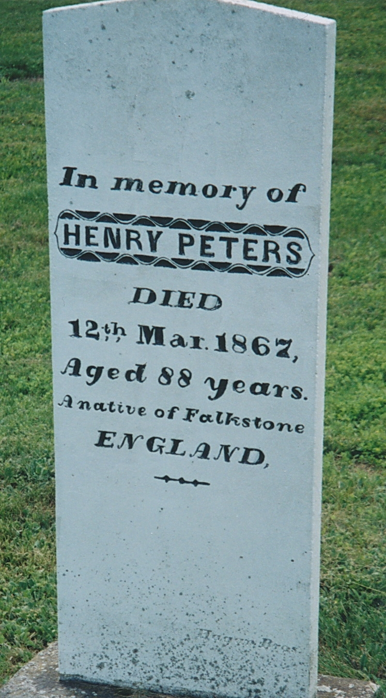
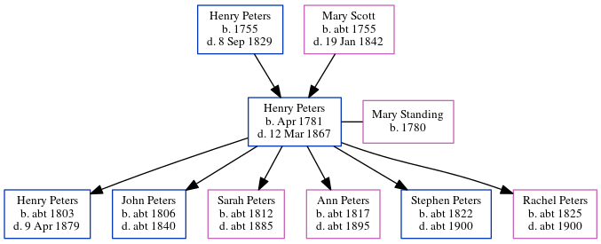

Henry Peters 1781 - 1867
[ Home ] | [ Calendar ] | [ Surnames Index ] | [ Errors ] | [ Family History ]The child of Henry Peters and Mary Scott, Henry Peters, the four times great-uncle of Nigel Horne, was born in Folkestone, Kent, England in Apr 17811 and married Mary Standing (with whom he had 6 children: Henry Warman, John, Sarah Ann, Ann, Stephen and Rachel) at SS Mary & Eanswith in Folkestone on 28 May 18032.
During his life, he was living in Richibucto, Kent, New Brunswick, Canada in 1861.
He died on 12 Mar 1867 in Richibucto and was buried there at Methodist Point Cemetery after 12 Mar 1867.
Parents
- Henry was born in 1755
- Mary was born c. 1755
Children
- Henry Warman was born c. 1803
- John was born c. 1806
- Sarah Ann was born c. 1812
- Ann was born c. 1817
- Stephen was born c. 1822
- Rachel was born c. 1825
Citations
- Canada Census 1861 - Findmypast (was the father of the head of the household)
- England, Select Marriages, 1538–1973 Ancestry.com Operations, Inc.
Media
Henry Peters - headstone

Canterbury Marriage Banns Transcription - GBPRS-CANT-M-94042429-1
Canterbury Marriages Transcription - GBPRS-CANT-M-97134970-1
England Marriages 1538-1973 Transcription - R_847837017
England Marriages 1538-1973 Transcription - R_848367121
England Marriages 1538-1973 - R_848366734
Canada Census 1861 - CAN/CENSUS/1861/02668132
Family Tree
Map
Generated by ged2site. Last updated on Jul 3, 2024
Known Issues
Death date (12 Mar 1867) has no citations
Burial place (Richibucto, Kent, New Brunswick, Canada) has no citations
Residence record for 1861 contains no citation
Listed in the residence for 1861, but spouse Mary Standing is not
Adding date of burial as 'aft 12 Mar 1867'